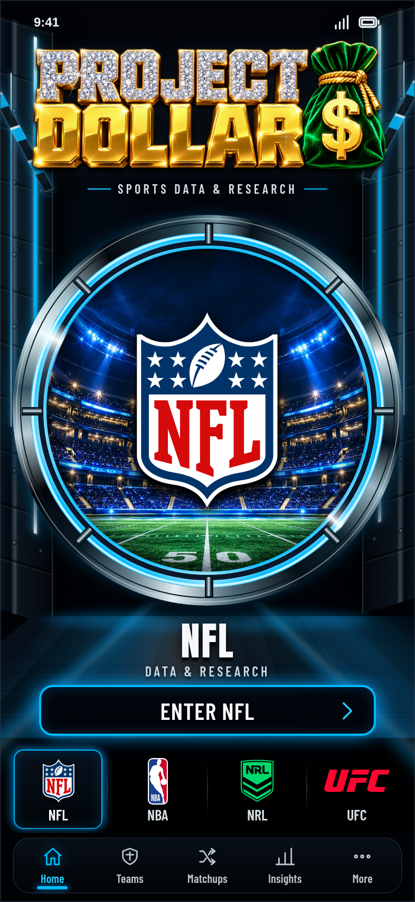
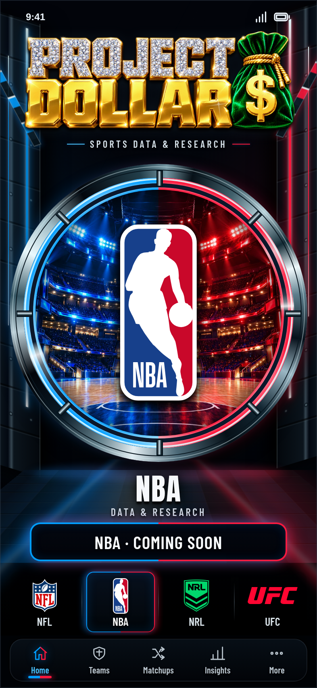
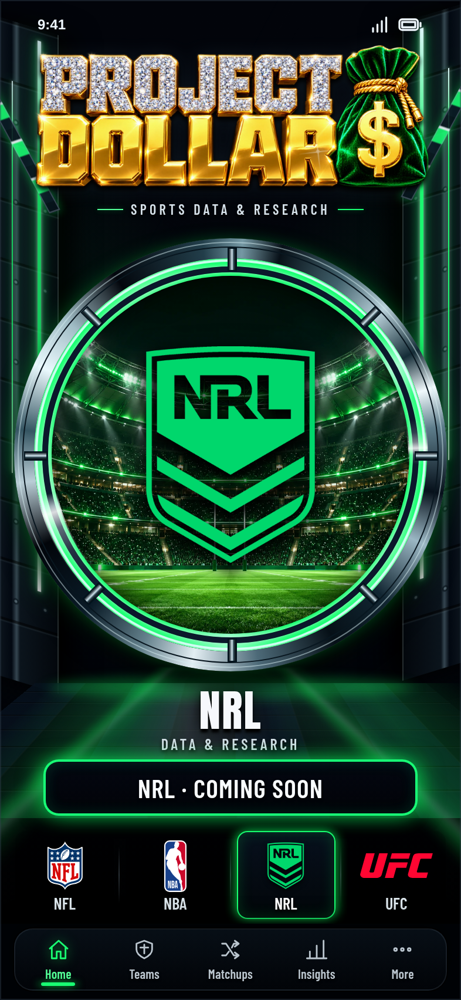
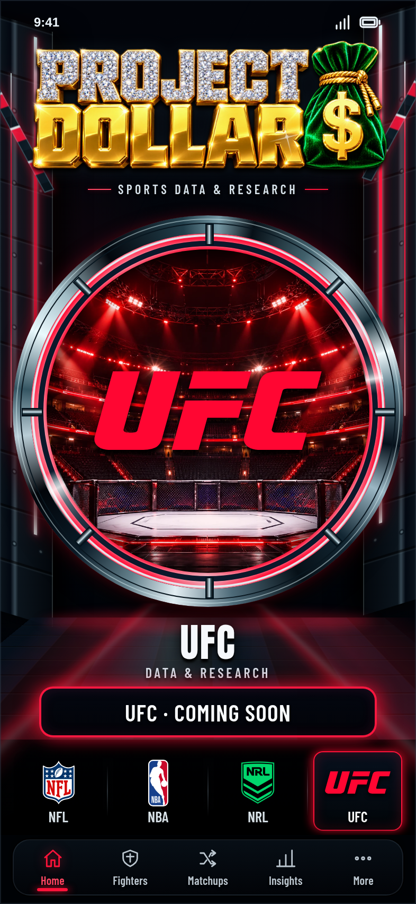
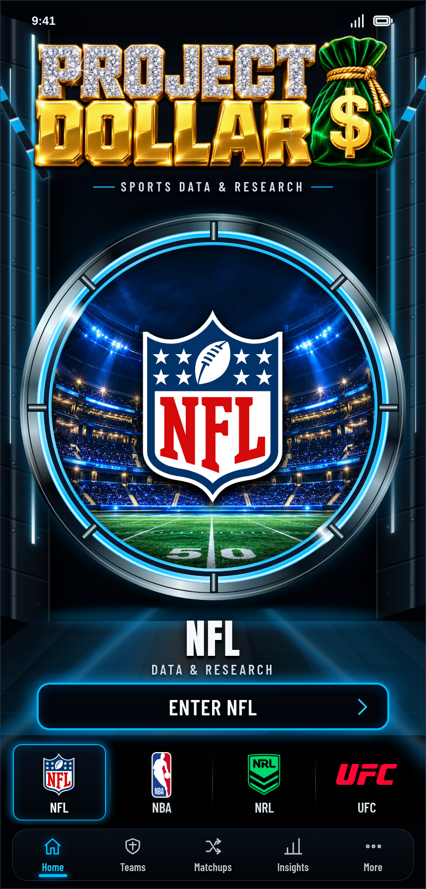
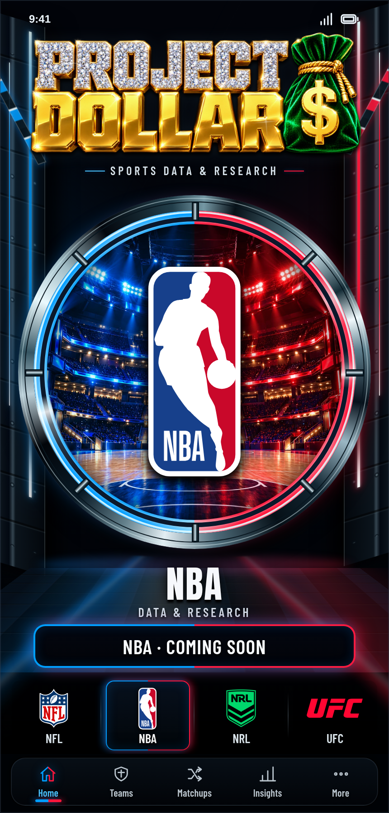
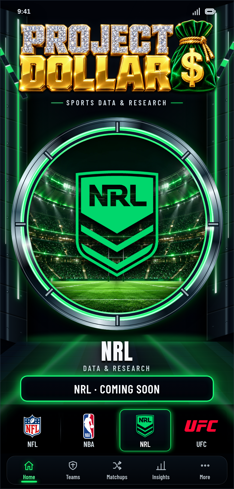
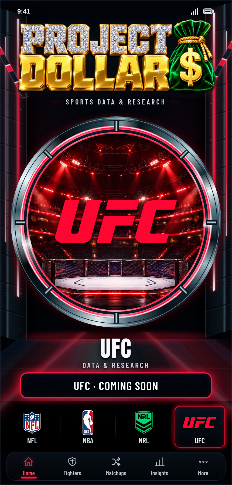

Captured 2026-10-06T23:33:19.859Z. Animations were paused only during screenshot exposure; motion was verified across live frames separately. Mobile emulation is not physical iPhone/Safari-controls testing.
The approved source is the four-sport gate render reattached in chat. Original reference bytes are not present in this report; these screenshots are actual browser evidence, not pixel-registered side-by-side composites. A human visual comparison against the chat source is required.







